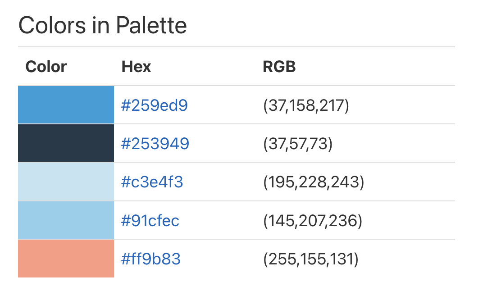

Website Planning Document
Color Scheme
The application of the colors are as follow:
- #259ed9: heading and footer
- #91cfec: navigation bar and "Website Planning Document" headings
- #c3e4f3: navigation hover.
- #ff9b83 fonts color for the header, footer and navigation items
- color black: main fonts.
- light blue, yellow, black and white: logo colors
Typography
| Item | Font | Size | Colors and Background | Sample |
|---|---|---|---|---|
| Site Header | Yusei Magic | 30px | #259ed9 | Sample |
| Navigation Bar | Lato | 25px | #91cfec | Sample |
| Heading 2 | Yusei Magic | 25px | #black | Sample |
| Heading 3 | Yusei Magic | 23px | #black | Sample |
| Heading 4 | Yusei Magic | 20px | #black | Sample |
| "Website Planning Document" heading | Yusei Magic | 25px | #91cfec | Sample |
| Lists | Lato | 18px | #black | Sample |